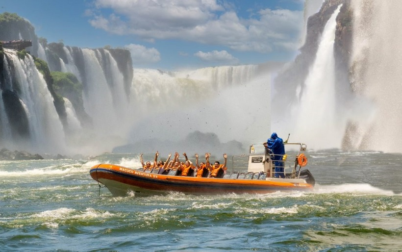
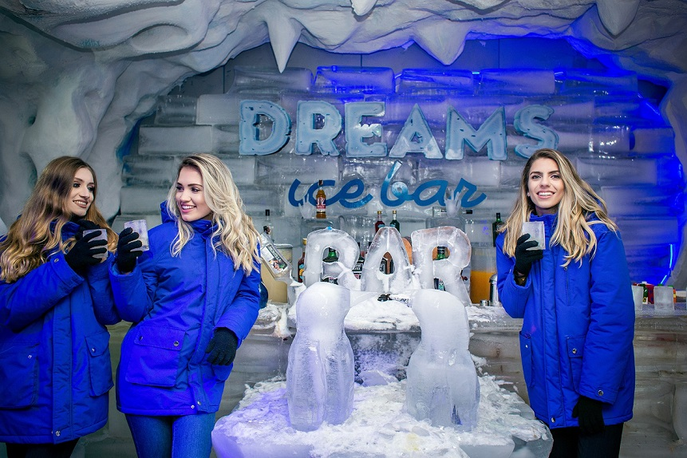
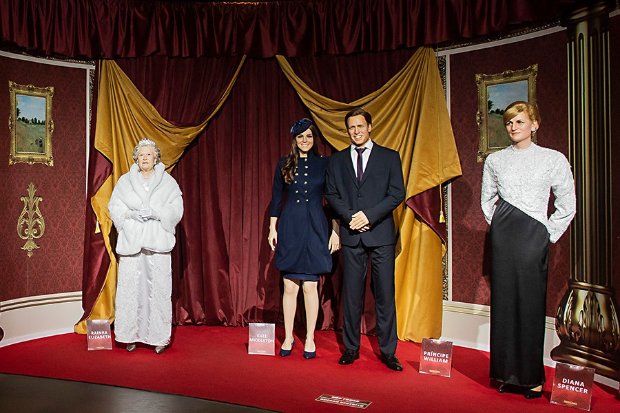
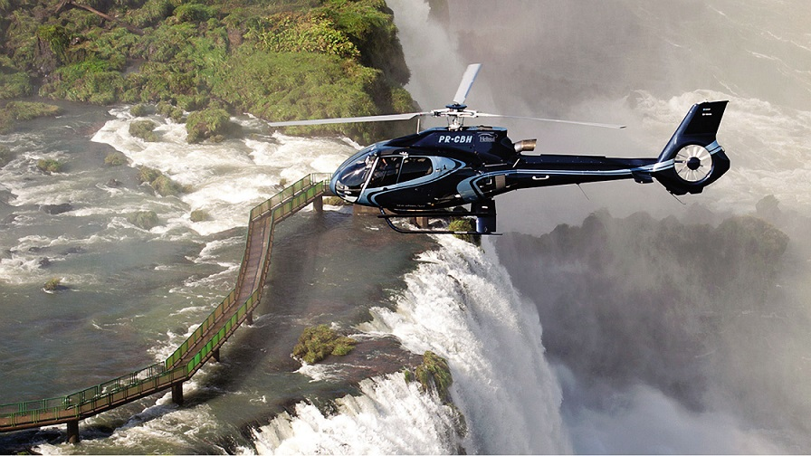
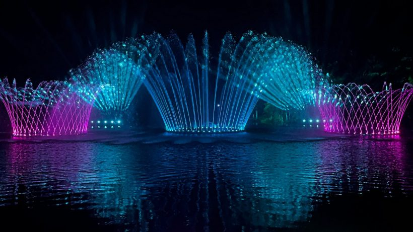

n sei lalal
Macuco Safári

Considerado o melhor passeio em Foz do Iguaçu. Uma aventura de barco com muita adrenalina pelas corredeiras do Rio Iguaçu culminando num verdadeiro banho de cachoeira nas
Cataratas do Iguaçu. O ponto de partida do passeio é no interior do Parque Nacional do Iguaçu, sendo um dos atrativos extras oferecidos aos turistas que visitam as Cataratas.
A duração total do Macuco Safari é de 2h, sendo dividido em três etapas: Primeira parte é um trajeto em veículo elétrico onde um guia explica mais sobre a fauna e flora do
Parque Nacional. O passeio do Macuco Safari em Foz do Iguaçu continua com uma pequena caminhada por uma trilha de madeira de 600m até chegar ao deck, onde os turistas recebem
os coletes salva vidas para embarcar nos barcos bimotores que te levam rio acima, passando pelas corredeiras até as Cataratas do Iguaçu. Próximo às quedas acontece uma parada
para fotografias para em seguida finalizar com uma bela ducha nas Cataratas do Iguaçu.
Dreams ice bar - Dreams park show

Uma aventura congelante na terra das Cataratas!
As altas temperaturas Foz do Iguaçu estão prestes a cair com inauguração do Dreams Ice Bar, maior bar de gelo do mundo, com mais de 300 m². Além da sensação de estar dentro de
uma caverna de gelo, a menos 11ºC, você vai se surpreender com os móveis e a decoração. Eles são feitos em gelo cristalino e incluem belas esculturas.
No local o visitante encontrará um bar, sofás, golfinhos e pinguins, todos esculpidos em gelo. Entretanto, a decoração tem a possibilidade de ser renovada a qualquer momento,
já que atrativo comprou uma máquina para fazer suas próprias esculturas. O Bar funcionará diariamente das 8h às 23h. Para os adultos serão servidos coquetéis, já para as crianças,
chocolate gelado. E tanto os adultos como as crianças receberão roupas especiais para poder se divertir com tranquilidade na pista de dança.
Museu de cera - Dreams park show

O Museu de Cera de Foz do Iguaçu é uma oportunidade para você mergulhar na fantasia. São mais de 90 personalidades em tamanho real. Entre elas: Elvis Presley, Tom Cruise, Amy Winehouse, Mister Bean, Frank Sinatra, Will Smith, Michael Jackson, Santos Dumont, Albert Einstein, Papa Francisco, Papa João Paulo II, além de várias outras. Tem até um cenário todinho do Star Wars! Todas elas produzidas em Londres. O museu se destaca também pela decoração dos ambientes. O atrativo faz parte do aclamado complexo de entretenimento Dreams Park Show localizado em várias cidades turísticas do país.
Voo de helicóptero sobre as cataratas

Uma alternativa para explorar ainda mais todos os detalhes das Cataratas é observando do alto. Há passeios de helicóptero que saem do Parque Nacional do Iguaçu, geralmente com valores altos por poucos minutos de voo. Não é tão barato, porém certamente a satisfação pela paisagem é garantida.
Wonder Water Show

foi inaugurado no dia 2 de dezembro de 2022 e criado em homenagem à região que abriga as Cataratas do Iguaçu, o rio Paraná, o Aquífero Guarani e também importantes rios urbanos,
como Monjolo e M’Boicy. Por isso, tem a água como seu elemento principal.
Segundo o Wonder Park, o show é inédito no Brasil e o atrativo é inspirado em fontes de cidades turísticas do mundo. Além disso, a trilha sonora da apresentação tem contribuição
do músico Allen Lima, da Família Lima.
Dos detalhes técnicos, a fonte tem um jato central que chega a quase 30 metros de altura, além de círculos centrais, laterais e mais um arco de fundo, com jatos de água e iluminação led. Apesar de ser uma atração permanente no Wonder Park Foz, em dezembro e meados de janeiro a fonte ganha um espetáculo extra para a programação natalina